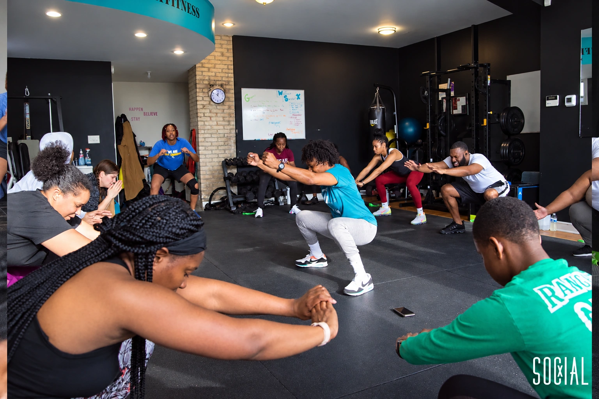
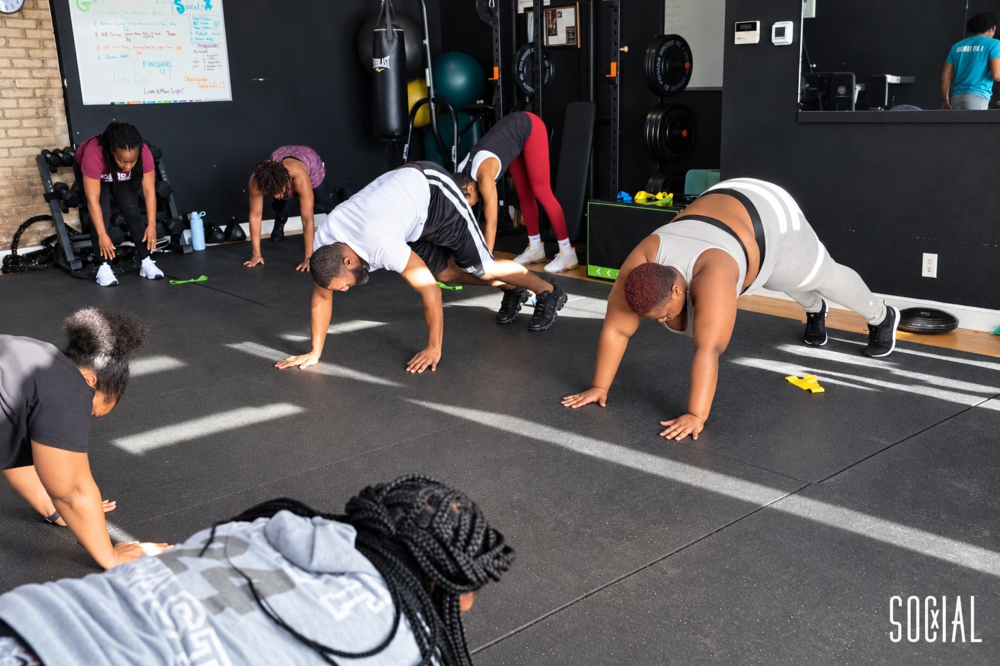
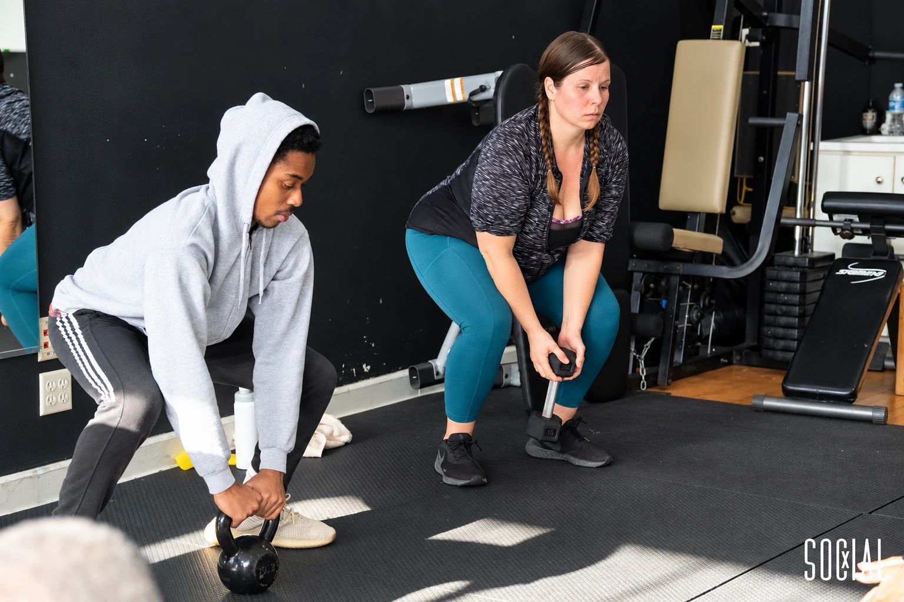

INMOTION.
Movement. People. Milwaukee.
Videos, gym moments and the community behind Sport My Fitness.
THE PEOPLE. THE ENERGY.
TOGETHER
IN THE GYM.
A few moments from the Sport My Fitness community.
Photography: Social X · 2024 event archive


FROM THE ARCHIVE · TMJ4
FITNESS FRIDAY.
Yoshi joins Live at Four to talk about stretching.